RandomMixture¶
-
class
RandomMixture(*args)¶ RandomMixture distribution.
Refer to Random Mixture: affine combination of independent univariate distributions.
- Available constructors:
RandomMixture(coll, cst)
RandomMixture(coll, weights, cst)
RandomMixture(coll, weightsMatrix)
RandomMixture(coll, weightsMatrix, constant)
Parameters: - coll : list of
Distribution The collection of distributions that model the random vector.
- cst : float
Constant coefficient of the affine expression in dimension 1. Default value is zero.
- weights : sequence of float
Weights of the affine combination in dimension 1.
- constant : sequence of float
Constant vector of the affine expression. Its size should be equal to the dimension of the distribution. Default value is (0,…,0).
- weightsMatrix : 2-d sequence of float
Weights of the affine combination.
Notes
- Create an affine combination of input random variables of form:
- 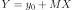
- where:
 of size
of size  with 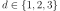
with 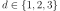  is a
is a  -random vector with independent components, i.e. a
collection of univariate distributions,
-random vector with independent components, i.e. a
collection of univariate distributions, is a 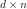 deterministic matrix, i.e. the linear
operator of the affine transformation,
is a 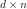 deterministic matrix, i.e. the linear
operator of the affine transformation,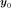 a constant and deterministic vector, i.e the constant part of the affine transformation.
As the univariate random variables
 are independent, the
characteristic function of , denoted 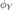, is
easily defined from the characteristic function of
are independent, the
characteristic function of , denoted 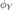, is
easily defined from the characteristic function of  denoted
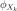 as follows :
denoted
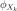 as follows :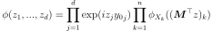
It is possible to evaluate its density probability function once the characteristic function evaluated, using the Poisson summation formula:
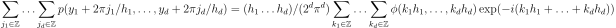
For
 small enough, the nested sums of the left term are reduced
to the central term 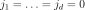.
Thus, the density is approximated by:
small enough, the nested sums of the left term are reduced
to the central term 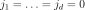.
Thus, the density is approximated by: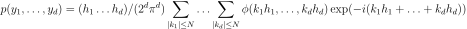
The nested sums of the right term are computed by blocks of form 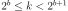, and are truncated when the contribution of a block becomes lower than a threshold, which can be changed by setPDFPrecision method. Two other methods also may change the number of iterations; setBlockMin sets the block number from which truncation is possible, which means that computations are always performed for blocks lower than this parameter, even if their contributions are very small. On the other hand, setBlockMax sets the maximum number of blocks, which can be useful to make sure that computations run in a limited time.
Note that the total number of evaluations of the characteristic function to compute up to block
 is equivalent to 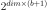, so
it is important to ensure that this number has some reasonable value.
is equivalent to 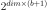, so
it is important to ensure that this number has some reasonable value.Note finally that the characteristic function evaluations are independent from 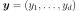: these values are stored in a cache.
Its first moments are:
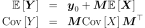
Examples
Create a distribution:
>>> import openturns as ot >>> distribution = ot.RandomMixture([ot.Normal(), ot.Uniform()])
Draw a sample:
>>> sample = distribution.getSample(5)
Attributes: thisownThe membership flag
Methods
abs()Transform distribution by absolute value function. acos()Transform distribution by arccosine function. acosh()Transform distribution by acosh function. asin()Transform distribution by arcsine function. asinh()Transform distribution by asinh function. atan()Transform distribution by arctangent function. atanh()Transform distribution by atanh function. cbrt()Transform distribution by cubic root function. computeBilateralConfidenceInterval(prob)Compute a bilateral confidence interval. computeBilateralConfidenceIntervalWithMarginalProbability(prob)Compute a bilateral confidence interval. computeCDF(*args)Compute the cumulative distribution function. computeCDFGradient(*args)Compute the gradient of the cumulative distribution function. computeCharacteristicFunction(*args)Compute the characteristic function. computeComplementaryCDF(*args)Compute the complementary cumulative distribution function. computeConditionalCDF(*args)Compute the conditional cumulative distribution function. computeConditionalDDF(x, y)Compute the conditional derivative density function of the last component. computeConditionalPDF(*args)Compute the conditional probability density function. computeConditionalQuantile(*args)Compute the conditional quantile function of the last component. computeDDF(*args)Compute the derivative density function. computeDensityGenerator(betaSquare)Compute the probability density function of the characteristic generator. computeDensityGeneratorDerivative(betaSquare)Compute the first-order derivative of the probability density function. computeDensityGeneratorSecondDerivative(…)Compute the second-order derivative of the probability density function. computeEntropy()Compute the entropy of the distribution. computeGeneratingFunction(*args)Compute the probability-generating function. computeInverseSurvivalFunction(point)Compute the inverse survival function. computeLogCharacteristicFunction(*args)Compute the logarithm of the characteristic function. computeLogGeneratingFunction(*args)Compute the logarithm of the probability-generating function. computeLogPDF(*args)Compute the logarithm of the probability density function. computeLogPDFGradient(*args)Compute the gradient of the log probability density function. computeMinimumVolumeInterval(prob)Compute the confidence interval with minimum volume. computeMinimumVolumeIntervalWithMarginalProbability(prob)Compute the confidence interval with minimum volume. computeMinimumVolumeLevelSet(prob)Compute the confidence domain with minimum volume. computeMinimumVolumeLevelSetWithThreshold(prob)Compute the confidence domain with minimum volume. computePDF(*args)Compute the probability density function. computePDFGradient(*args)Compute the gradient of the probability density function. computeProbability(interval)Compute the interval probability. computeQuantile(*args)Compute the quantile function. computeRadialDistributionCDF(radius[, tail])Compute the cumulative distribution function of the squared radius. computeScalarQuantile(prob[, tail])Compute the quantile function for univariate distributions. computeSurvivalFunction(*args)Compute the survival function. computeUnilateralConfidenceInterval(prob[, tail])Compute a unilateral confidence interval. computeUnilateralConfidenceIntervalWithMarginalProbability(…)Compute a unilateral confidence interval. cos()Transform distribution by cosine function. cosh()Transform distribution by cosh function. drawCDF(*args)Draw the cumulative distribution function. drawLogPDF(*args)Draw the graph or of iso-lines of log-probability density function. drawMarginal1DCDF(marginalIndex, xMin, xMax, …)Draw the cumulative distribution function of a margin. drawMarginal1DLogPDF(marginalIndex, xMin, …)Draw the log-probability density function of a margin. drawMarginal1DPDF(marginalIndex, xMin, xMax, …)Draw the probability density function of a margin. drawMarginal2DCDF(firstMarginal, …)Draw the cumulative distribution function of a couple of margins. drawMarginal2DLogPDF(firstMarginal, …)Draw the log-probability density function of a couple of margins. drawMarginal2DPDF(firstMarginal, …)Draw the probability density function of a couple of margins. drawPDF(*args)Draw the graph or of iso-lines of probability density function. drawQuantile(*args)Draw the quantile function. exp()Transform distribution by exponential function. getAlpha()Return the priori range of PDF and CDF argument. getBeta()Return the distance of the a priori range at which the PDF is negligible. getBlockMax()Return the blockMax parameter. getBlockMin()Return the blockMin parameter. getCDFEpsilon()Accessor to the CDF computation precision. getCenteredMoment(n)Accessor to the componentwise centered moments. getCholesky()Accessor to the Cholesky factor of the covariance matrix. getClassName()Accessor to the object’s name. getConstant()Return the vector of the affine combination. getCopula()Accessor to the copula of the distribution. getCorrelation()(ditch me?) getCovariance()Accessor to the covariance matrix. getDescription()Accessor to the componentwise description. getDimension()Accessor to the dimension of the distribution. getDispersionIndicator()Dispersion indicator accessor. getDistributionCollection()Return the list of distributions used. getId()Accessor to the object’s id. getIntegrationNodesNumber()Accessor to the number of Gauss integration points. getInverseCholesky()Accessor to the inverse Cholesky factor of the covariance matrix. getInverseIsoProbabilisticTransformation()Accessor to the inverse iso-probabilistic transformation. getIsoProbabilisticTransformation()Accessor to the iso-probabilistic transformation. getKendallTau()Accessor to the Kendall coefficients matrix. getKurtosis()Accessor to the componentwise kurtosis. getLinearCorrelation()(ditch me?) getMarginal(*args)Accessor to marginal distributions. getMaxSize()Return the maximum size of cache for characteristic function evaluations. getMean()Accessor to the mean. getMoment(n)Accessor to the componentwise moments. getName()Accessor to the object’s name. getPDFEpsilon()Accessor to the PDF computation precision. getParameter()Accessor to the parameter of the distribution. getParameterDescription()Accessor to the parameter description of the distribution. getParameterDimension()Accessor to the number of parameters in the distribution. getParametersCollection()Accessor to the parameter of the distribution. getPearsonCorrelation()Accessor to the Pearson correlation matrix. getPositionIndicator()Position indicator accessor. getProbabilities()Accessor to the discrete probability levels. getRange()Accessor to the range of the distribution. getRealization()Accessor to a pseudo-random realization from the distribution. getReferenceBandwidth()Return the reference bandwidth. getRoughness()Accessor to roughness of the distribution. getSample(size)Accessor to a pseudo-random sample from the distribution. getShadowedId()Accessor to the object’s shadowed id. getShapeMatrix()Accessor to the shape matrix of the underlying copula if it is elliptical. getShiftedMoment(n, shift)Accessor to the componentwise shifted moments. getSingularities()Accessor to the singularities of the PDF function. getSkewness()Accessor to the componentwise skewness. getSpearmanCorrelation()Accessor to the Spearman correlation matrix. getStandardDeviation()Accessor to the componentwise standard deviation. getStandardDistribution()Accessor to the standard distribution. getStandardMoment(n)Accessor to the componentwise standard moments. getStandardRepresentative()Accessor to the standard representative distribution in the parametric family. getSupport(*args)Accessor to the support of the distribution. getVisibility()Accessor to the object’s visibility state. getWeights()Return the weights of the combination as a Matrix. hasEllipticalCopula()Test whether the copula of the distribution is elliptical or not. hasIndependentCopula()Test whether the copula of the distribution is the independent one. hasName()Test if the object is named. hasVisibleName()Test if the object has a distinguishable name. inverse()Transform distribution by inverse function. isContinuous()Test whether the distribution is continuous or not. isCopula()Test whether the distribution is a copula or not. isDiscrete()Test whether the distribution is discrete or not. isElliptical()Test whether the distribution is elliptical or not. isIntegral()Test whether the distribution is integer-valued or not. ln()Transform distribution by natural logarithm function. log()Transform distribution by natural logarithm function. project(*args)Project a RandomMixture distribution over a collection of DistributionFactory. setAlpha(alpha)Set the a priori range of PDF and CDF arguments in terms of standard deviation. setBeta(beta)Set the distance of the a priori range at which the PDF is negligible. setBlockMax(blockMax)Set the blockMax parameter. setBlockMin(blockMin)Set the blockMin parameter. setCDFPrecision(cdfPrecision)Set the requested precision for CDF computation. setConstant(constant)Set the constant term of the affine combination. setDescription(description)Accessor to the componentwise description. setIntegrationNodesNumber(integrationNodesNumber)Accessor to the number of Gauss integration points. setMaxSize(maxSize)Set the maximum size of cache for characteristic function evaluations. setName(name)Accessor to the object’s name. setPDFPrecision(pdfPrecision)Set the requested precision for PDF computation. setParameter(parameter)Accessor to the parameter of the distribution. setParametersCollection(*args)Accessor to the parameter of the distribution. setReferenceBandwidth(bandwidth)Set the reference bandwidth. setShadowedId(id)Accessor to the object’s shadowed id. setVisibility(visible)Accessor to the object’s visibility state. sin()Transform distribution by sine function. sinh()Transform distribution by sinh function. sqr()Transform distribution by square function. sqrt()Transform distribution by square root function. tan()Transform distribution by tangent function. tanh()Transform distribution by tanh function. getFFTAlgorithm setFFTAlgorithm -
__init__(*args)¶ Initialize self. See help(type(self)) for accurate signature.
-
abs()¶ Transform distribution by absolute value function.
Returns: - dist :
Distribution The transformed distribution.
- dist :
-
acos()¶ Transform distribution by arccosine function.
Returns: - dist :
Distribution The transformed distribution.
- dist :
-
acosh()¶ Transform distribution by acosh function.
Returns: - dist :
Distribution The transformed distribution.
- dist :
-
asin()¶ Transform distribution by arcsine function.
Returns: - dist :
Distribution The transformed distribution.
- dist :
-
asinh()¶ Transform distribution by asinh function.
Returns: - dist :
Distribution The transformed distribution.
- dist :
-
atan()¶ Transform distribution by arctangent function.
Returns: - dist :
Distribution The transformed distribution.
- dist :
-
atanh()¶ Transform distribution by atanh function.
Returns: - dist :
Distribution The transformed distribution.
- dist :
-
cbrt()¶ Transform distribution by cubic root function.
Returns: - dist :
Distribution The transformed distribution.
- dist :
-
computeBilateralConfidenceInterval(prob)¶ Compute a bilateral confidence interval.
Parameters: - alpha : float, 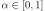
The confidence level.
Returns: - confInterval :
Interval The confidence interval of level
 .
.
Notes
We consider an absolutely continuous measure
 with density function p.
with density function p.The bilateral confidence interval
 is the cartesian product
is the cartesian product ![I^*_{\alpha} = [a_1, b_1] \times \dots \times [a_d, b_d]](../../_images/math/9fa69f780335d17dda624cc261941aa2a12657f8.svg) where
where  and 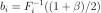 for all i and which verifies
and 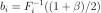 for all i and which verifies  .
.Examples
Create a sample from a Normal distribution:
>>> import openturns as ot >>> sample = ot.Normal().getSample(10) >>> ot.ResourceMap.SetAsUnsignedInteger('DistributionFactory-DefaultBootstrapSize', 100)
Fit a Normal distribution and extract the asymptotic parameters distribution:
>>> fittedRes = ot.NormalFactory().buildEstimator(sample) >>> paramDist = fittedRes.getParameterDistribution()
Determine the bilateral confidence interval at level 0.9:
>>> confInt = paramDist.computeBilateralConfidenceInterval(0.9)
-
computeBilateralConfidenceIntervalWithMarginalProbability(prob)¶ Compute a bilateral confidence interval.
Refer to
computeBilateralConfidenceInterval()Parameters: - alpha : float,
The confidence level.
Returns: - confInterval :
Interval The confidence interval of level
.- marginalProb : float
The value
 which is the common marginal probability of each marginal interval.
which is the common marginal probability of each marginal interval.
Examples
Create a sample from a Normal distribution:
>>> import openturns as ot >>> sample = ot.Normal().getSample(10) >>> ot.ResourceMap.SetAsUnsignedInteger('DistributionFactory-DefaultBootstrapSize', 100)
Fit a Normal distribution and extract the asymptotic parameters distribution:
>>> fittedRes = ot.NormalFactory().buildEstimator(sample) >>> paramDist = fittedRes.getParameterDistribution()
Determine the bilateral confidence interval at level 0.9 with marginal probability:
>>> confInt, marginalProb = paramDist.computeBilateralConfidenceIntervalWithMarginalProbability(0.9)
-
computeCDF(*args)¶ Compute the cumulative distribution function.
Parameters: - X : sequence of float, 2-d sequence of float
CDF input(s).
Returns: - F : float,
Point CDF value(s) at input(s) X.
Notes
The cumulative distribution function is defined as:
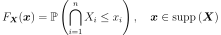
-
computeCDFGradient(*args)¶ Compute the gradient of the cumulative distribution function.
Parameters: - X : sequence of float
CDF input.
Returns: - dFdtheta :
Point Partial derivatives of the CDF with respect to the distribution parameters at input X.
-
computeCharacteristicFunction(*args)¶ Compute the characteristic function.
Parameters: - t : float
Characteristic function input.
Returns: - phi : complex
Characteristic function value at input t.
Notes
The characteristic function is defined as:
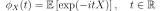
OpenTURNS features a generic implementation of the characteristic function for all its univariate distributions (both continuous and discrete). This default implementation might be time consuming, especially as the modulus of t gets high. Only some univariate distributions benefit from dedicated more efficient implementations.
-
computeComplementaryCDF(*args)¶ Compute the complementary cumulative distribution function.
Parameters: - X : sequence of float, 2-d sequence of float
Complementary CDF input(s).
Returns: - C : float,
Point Complementary CDF value(s) at input(s) X.
See also
Notes
The complementary cumulative distribution function.
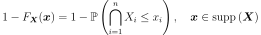
Warning
This is not the survival function (except for 1-dimensional distributions).
-
computeConditionalCDF(*args)¶ Compute the conditional cumulative distribution function.
Parameters: - Xn : float, sequence of float
Conditional CDF input (last component).
- Xcond : sequence of float, 2-d sequence of float with size

Conditionning values for the other components.
Returns: - F : float, sequence of float
Conditional CDF value(s) at input Xn, Xcond.
Notes
The conditional cumulative distribution function of the last component with respect to the other fixed components is defined as follows:

-
computeConditionalDDF(x, y)¶ Compute the conditional derivative density function of the last component.
With respect to the other fixed components.
Parameters: - Xn : float
Conditional DDF input (last component).
- Xcond : sequence of float with dimension
Conditionning values for the other components.
Returns: - d : float
Conditional DDF value at input Xn, Xcond.
See also
-
computeConditionalPDF(*args)¶ Compute the conditional probability density function.
Conditional PDF of the last component with respect to the other fixed components.
Parameters: - Xn : float, sequence of float
Conditional PDF input (last component).
- Xcond : sequence of float, 2-d sequence of float with size
Conditionning values for the other components.
Returns: - F : float, sequence of float
Conditional PDF value(s) at input Xn, Xcond.
See also
-
computeConditionalQuantile(*args)¶ Compute the conditional quantile function of the last component.
Conditional quantile with respect to the other fixed components.
Parameters: - p : float, sequence of float, 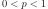
Conditional quantile function input.
- Xcond : sequence of float, 2-d sequence of float with size
Conditionning values for the other components.
Returns: - X1 : float
Conditional quantile at input p, Xcond.
See also
-
computeDDF(*args)¶ Compute the derivative density function.
Parameters: - X : sequence of float, 2-d sequence of float
PDF input(s).
Returns: Notes
The derivative density function is the gradient of the probability density function with respect to
 :
:
-
computeDensityGenerator(betaSquare)¶ Compute the probability density function of the characteristic generator.
PDF of the characteristic generator of the elliptical distribution.
Parameters: - beta2 : float
Density generator input.
Returns: - p : float
Density generator value at input X.
See also
Notes
This is the function
 such that the probability density function
rewrites:
such that the probability density function
rewrites: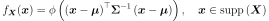
This function only exists for elliptical distributions.
-
computeDensityGeneratorDerivative(betaSquare)¶ Compute the first-order derivative of the probability density function.
PDF of the characteristic generator of the elliptical distribution.
Parameters: - beta2 : float
Density generator input.
Returns: - p : float
Density generator first-order derivative value at input X.
See also
Notes
This function only exists for elliptical distributions.
-
computeDensityGeneratorSecondDerivative(betaSquare)¶ Compute the second-order derivative of the probability density function.
PDF of the characteristic generator of the elliptical distribution.
Parameters: - beta2 : float
Density generator input.
Returns: - p : float
Density generator second-order derivative value at input X.
See also
Notes
This function only exists for elliptical distributions.
-
computeEntropy()¶ Compute the entropy of the distribution.
Returns: - e : float
Entropy of the distribution.
Notes
The entropy of a distribution is defined by:
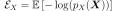
Where the random vector
follows the probability
distribution of interest, and 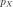 is either the probability
density function of if it is continuous or the
probability distribution function if it is discrete.
-
computeGeneratingFunction(*args)¶ Compute the probability-generating function.
Parameters: - z : float or complex
Probability-generating function input.
Returns: - g : float
Probability-generating function value at input X.
See also
Notes
The probability-generating function is defined as follows:

This function only exists for discrete distributions. OpenTURNS implements this method for univariate distributions only.
-
computeInverseSurvivalFunction(point)¶ Compute the inverse survival function.
Parameters: - p : float,
![p \in [0; 1]](../../_images/math/9613d34aa95817f0a3deed21e23a1037fa0518af.svg)
Level of the survival function.
Returns: - x :
Point Point
such that 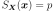 with iso-quantile components.
See also
Notes
The inverse survival function writes: 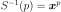 where 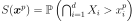. OpenTURNS returns the point
 such that
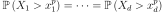.
such that
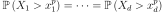.- p : float,
-
computeLogCharacteristicFunction(*args)¶ Compute the logarithm of the characteristic function.
Parameters: - t : float
Characteristic function input.
Returns: - phi : complex
Logarithm of the characteristic function value at input t.
See also
Notes
OpenTURNS features a generic implementation of the characteristic function for all its univariate distributions (both continuous and discrete). This default implementation might be time consuming, especially as the modulus of t gets high. Only some univariate distributions benefit from dedicated more efficient implementations.
-
computeLogGeneratingFunction(*args)¶ Compute the logarithm of the probability-generating function.
Parameters: - z : float or complex
Probability-generating function input.
Returns: - lg : float
Logarithm of the probability-generating function value at input X.
See also
Notes
This function only exists for discrete distributions. OpenTURNS implements this method for univariate distributions only.
-
computeLogPDF(*args)¶ Compute the logarithm of the probability density function.
Parameters: - X : sequence of float, 2-d sequence of float
PDF input(s).
Returns: - f : float,
Point Logarithm of the PDF value(s) at input(s) X.
-
computeLogPDFGradient(*args)¶ Compute the gradient of the log probability density function.
Parameters: - X : sequence of float
PDF input.
Returns: - dfdtheta :
Point Partial derivatives of the logPDF with respect to the distribution parameters at input X.
-
computeMinimumVolumeInterval(prob)¶ Compute the confidence interval with minimum volume.
Parameters: - alpha : float,
The confidence level.
Returns: - confInterval :
Interval The confidence interval of level
.
Notes
We consider an absolutely continuous measure
with density function p.The minimum volume confidence interval
is the cartesian product where ![[a_i, b_i] = \argmin_{I \in \Rset \, | \, \mu_i(I) = \beta} \lambda_i(I)](../../_images/math/c0211d78c13b1135e34d68c45aa1ae003a4589ad.svg) and 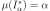 with
and 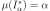 with  is the Lebesgue measure on 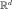.
is the Lebesgue measure on 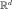.This problem resorts to solving d univariate non linear equations: for a fixed value
, we find each intervals 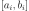 such that: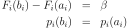
which consists of finding the bound 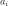 such that:
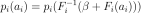
To find
, we use the Brent algorithm: 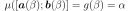 with g a non linear function.Examples
Create a sample from a Normal distribution:
>>> import openturns as ot >>> sample = ot.Normal().getSample(10) >>> ot.ResourceMap.SetAsUnsignedInteger('DistributionFactory-DefaultBootstrapSize', 100)
Fit a Normal distribution and extract the asymptotic parameters distribution:
>>> fittedRes = ot.NormalFactory().buildEstimator(sample) >>> paramDist = fittedRes.getParameterDistribution()
Determine the confidence interval of the native parameters at level 0.9 with minimum volume:
>>> ot.ResourceMap.SetAsUnsignedInteger('Distribution-MinimumVolumeLevelSetSamplingSize', 1000) >>> confInt = paramDist.computeMinimumVolumeInterval(0.9)
-
computeMinimumVolumeIntervalWithMarginalProbability(prob)¶ Compute the confidence interval with minimum volume.
Refer to
computeMinimumVolumeInterval()Parameters: - alpha : float,
The confidence level.
Returns: - confInterval :
Interval The confidence interval of level
.- marginalProb : float
The value
which is the common marginal probability of each marginal interval.
Examples
Create a sample from a Normal distribution:
>>> import openturns as ot >>> sample = ot.Normal().getSample(10) >>> ot.ResourceMap.SetAsUnsignedInteger('DistributionFactory-DefaultBootstrapSize', 100)
Fit a Normal distribution and extract the asymptotic parameters distribution:
>>> fittedRes = ot.NormalFactory().buildEstimator(sample) >>> paramDist = fittedRes.getParameterDistribution()
Determine the confidence interval of the native parameters at level 0.9 with minimum volume:
>>> ot.ResourceMap.SetAsUnsignedInteger('Distribution-MinimumVolumeLevelSetSamplingSize', 1000) >>> confInt, marginalProb = paramDist.computeMinimumVolumeIntervalWithMarginalProbability(0.9)
-
computeMinimumVolumeLevelSet(prob)¶ Compute the confidence domain with minimum volume.
Parameters: - alpha : float,
The confidence level.
Returns: - levelSet :
LevelSet The minimum volume domain of measure
.
Notes
We consider an absolutely continuous measure
with density function p.The minimum volume confidence domain
 is the set of minimum volume and which measure is at least . It is defined by:
is the set of minimum volume and which measure is at least . It is defined by:
where
is the Lebesgue measure on . Under some general conditions on (for example, no flat regions), the set is unique and realises the minimum:  . We show that writes:
. We show that writes: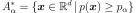
for a certain 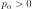.
If we consider the random variable 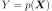, with cumulative distribution function 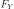, then
 is defined by:
is defined by: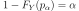
Thus the minimum volume domain of confidence
is the interior of the domain which frontier is the  quantile of
quantile of  . It can be determined with simulations of .
. It can be determined with simulations of .Examples
Create a sample from a Normal distribution:
>>> import openturns as ot >>> sample = ot.Normal().getSample(10) >>> ot.ResourceMap.SetAsUnsignedInteger('DistributionFactory-DefaultBootstrapSize', 100)
Fit a Normal distribution and extract the asymptotic parameters distribution:
>>> fittedRes = ot.NormalFactory().buildEstimator(sample) >>> paramDist = fittedRes.getParameterDistribution()
Determine the confidence region of minimum volume of the native parameters at level 0.9:
>>> levelSet = paramDist.computeMinimumVolumeLevelSet(0.9)
-
computeMinimumVolumeLevelSetWithThreshold(prob)¶ Compute the confidence domain with minimum volume.
Refer to
computeMinimumVolumeLevelSet()Parameters: - alpha : float,
The confidence level.
Returns: - levelSet :
LevelSet The minimum volume domain of measure
.- level : float
The value
of the density function defining the frontier of the domain.
Examples
Create a sample from a Normal distribution:
>>> import openturns as ot >>> sample = ot.Normal().getSample(10) >>> ot.ResourceMap.SetAsUnsignedInteger('DistributionFactory-DefaultBootstrapSize', 100)
Fit a Normal distribution and extract the asymptotic parameters distribution:
>>> fittedRes = ot.NormalFactory().buildEstimator(sample) >>> paramDist = fittedRes.getParameterDistribution()
Determine the confidence region of minimum volume of the native parameters at level 0.9 with PDF threshold:
>>> levelSet, threshold = paramDist.computeMinimumVolumeLevelSetWithThreshold(0.9)
-
computePDF(*args)¶ Compute the probability density function.
Parameters: - X : sequence of float, 2-d sequence of float
PDF input(s).
Returns: - f : float,
Point PDF value(s) at input(s) X.
Notes
The probability density function is defined as follows:
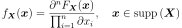
-
computePDFGradient(*args)¶ Compute the gradient of the probability density function.
Parameters: - X : sequence of float
PDF input.
Returns: - dfdtheta :
Point Partial derivatives of the PDF with respect to the distribution parameters at input X.
-
computeProbability(interval)¶ Compute the interval probability.
Parameters: - interval :
Interval An interval, possibly multivariate.
Returns: - P : float
Interval probability.
Notes
This computes the probability that the random vector
lies in
the hyper-rectangular region formed by the vectors  and
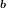:
and
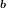:
where the sum runs over the 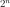 vectors such that with 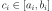, and
 is the number of components in
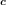 such that 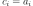.
is the number of components in
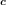 such that 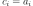.- interval :
-
computeQuantile(*args)¶ Compute the quantile function.
Parameters: - p : float,
Quantile function input (a probability).
Returns: - X :
Point Quantile at probability level p.
Notes
The quantile function is also known as the inverse cumulative distribution function:
-
computeRadialDistributionCDF(radius, tail=False)¶ Compute the cumulative distribution function of the squared radius.
For the underlying standard spherical distribution (for elliptical distributions only).
Parameters: - r2 : float, 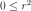
Squared radius.
Returns: - F : float
CDF value at input r2.
Notes
This is the CDF of the sum of the squared independent, standard, identically distributed components:
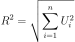
-
computeScalarQuantile(prob, tail=False)¶ Compute the quantile function for univariate distributions.
Parameters: - p : float,
Quantile function input (a probability).
Returns: - X : float
Quantile at probability level p.
See also
Notes
The quantile function is also known as the inverse cumulative distribution function:
![Q_X(p) = F_X^{-1}(p), \quad p \in [0; 1]](../../_images/math/229911c6254e3984c0dc5b76e39b01523a4a4343.svg)
-
computeSurvivalFunction(*args)¶ Compute the survival function.
Parameters: - x : sequence of float, 2-d sequence of float
Survival function input(s).
Returns: - S : float,
Point Survival function value(s) at input(s) x.
See also
Notes
The survival function of the random vector
is defined as follows: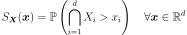
Warning
This is not the complementary cumulative distribution function (except for 1-dimensional distributions).
-
computeUnilateralConfidenceInterval(prob, tail=False)¶ Compute a unilateral confidence interval.
Parameters: - alpha : float,
The confidence level.
- tail : boolean
True indicates the interval is bounded by an lower value. False indicates the interval is bounded by an upper value. Default value is False.
Returns: - confInterval :
Interval The unilateral confidence interval of level
.
Notes
We consider an absolutely continuous measure
.The left unilateral confidence interval
is the cartesian product ![I^*_{\alpha} = ]-\infty, b_1] \times \dots \times ]-\infty, b_d]](../../_images/math/085de5a5a5b77645297a498e37df7ce6dc0fd944.svg) where 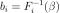 for all i and which verifies .
It means that is the quantile of level of the measure , with iso-quantile components.
where 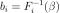 for all i and which verifies .
It means that is the quantile of level of the measure , with iso-quantile components.The right unilateral confidence interval
is the cartesian product 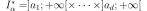 where  for all i and which verifies .
It means that
for all i and which verifies .
It means that  with iso-quantile components, where
with iso-quantile components, where  is the survival function of the measure .
is the survival function of the measure .Examples
Create a sample from a Normal distribution:
>>> import openturns as ot >>> sample = ot.Normal().getSample(10) >>> ot.ResourceMap.SetAsUnsignedInteger('DistributionFactory-DefaultBootstrapSize', 100)
Fit a Normal distribution and extract the asymptotic parameters distribution:
>>> fittedRes = ot.NormalFactory().buildEstimator(sample) >>> paramDist = fittedRes.getParameterDistribution()
Determine the right unilateral confidence interval at level 0.9:
>>> confInt = paramDist.computeUnilateralConfidenceInterval(0.9)
Determine the left unilateral confidence interval at level 0.9:
>>> confInt = paramDist.computeUnilateralConfidenceInterval(0.9, True)
-
computeUnilateralConfidenceIntervalWithMarginalProbability(prob, tail)¶ Compute a unilateral confidence interval.
Refer to
computeUnilateralConfidenceInterval()Parameters: - alpha : float,
The confidence level.
- tail : boolean
True indicates the interval is bounded by an lower value. False indicates the interval is bounded by an upper value. Default value is False.
Returns: - confInterval :
Interval The unilateral confidence interval of level
.- marginalProb : float
The value
which is the common marginal probability of each marginal interval.
Examples
Create a sample from a Normal distribution:
>>> import openturns as ot >>> sample = ot.Normal().getSample(10) >>> ot.ResourceMap.SetAsUnsignedInteger('DistributionFactory-DefaultBootstrapSize', 100)
Fit a Normal distribution and extract the asymptotic parameters distribution:
>>> fittedRes = ot.NormalFactory().buildEstimator(sample) >>> paramDist = fittedRes.getParameterDistribution()
Determine the right unilateral confidence interval at level 0.9:
>>> confInt, marginalProb = paramDist.computeUnilateralConfidenceIntervalWithMarginalProbability(0.9, False)
Determine the left unilateral confidence interval at level 0.9:
>>> confInt, marginalProb = paramDist.computeUnilateralConfidenceIntervalWithMarginalProbability(0.9, True)
-
cos()¶ Transform distribution by cosine function.
Returns: - dist :
Distribution The transformed distribution.
- dist :
-
cosh()¶ Transform distribution by cosh function.
Returns: - dist :
Distribution The transformed distribution.
- dist :
-
drawCDF(*args)¶ Draw the cumulative distribution function.
- Available constructors:
drawCDF(x_min, x_max, pointNumber)
drawCDF(lowerCorner, upperCorner, pointNbrInd)
drawCDF(lowerCorner, upperCorner)
Parameters: - x_min : float, optional
The min-value of the mesh of the x-axis. Defaults uses the quantile associated to the probability level Distribution-QMin from the
ResourceMap.- x_max : float, optional,

The max-value of the mesh of the y-axis. Defaults uses the quantile associated to the probability level Distribution-QMax from the
ResourceMap.- pointNumber : int
The number of points that is used for meshing each axis. Defaults uses DistributionImplementation-DefaultPointNumber from the
ResourceMap.- lowerCorner : sequence of float, of dimension 2, optional
The lower corner
![[x_{min}, y_{min}]](../../_images/math/c5e962e34868c66da70381f2728cf6007a2f606e.svg) .
.- upperCorner : sequence of float, of dimension 2, optional
The upper corner
![[x_{max}, y_{max}]](../../_images/math/8e031eb50547ab1abaff0081fe482510c1012a00.svg) .
.- pointNbrInd :
Indices, of dimension 2 Number of points that is used for meshing each axis.
Returns: - graph :
Graph A graphical representation of the CDF.
See also
Notes
Only valid for univariate and bivariate distributions.
Examples
View the CDF of a univariate distribution:
>>> import openturns as ot >>> dist = ot.Normal() >>> graph = dist.drawCDF() >>> graph.setLegends(['normal cdf'])
View the iso-lines CDF of a bivariate distribution:
>>> import openturns as ot >>> dist = ot.Normal(2) >>> graph2 = dist.drawCDF() >>> graph2.setLegends(['iso- normal cdf']) >>> graph3 = dist.drawCDF([-10, -5],[5, 10], [511, 511])
-
drawLogPDF(*args)¶ Draw the graph or of iso-lines of log-probability density function.
- Available constructors:
drawLogPDF(x_min, x_max, pointNumber)
drawLogPDF(lowerCorner, upperCorner, pointNbrInd)
drawLogPDF(lowerCorner, upperCorner)
Parameters: - x_min : float, optional
The min-value of the mesh of the x-axis. Defaults uses the quantile associated to the probability level Distribution-QMin from the
ResourceMap.- x_max : float, optional,
The max-value of the mesh of the y-axis. Defaults uses the quantile associated to the probability level Distribution-QMax from the
ResourceMap.- pointNumber : int
The number of points that is used for meshing each axis. Defaults uses DistributionImplementation-DefaultPointNumber from the
ResourceMap.- lowerCorner : sequence of float, of dimension 2, optional
The lower corner
.- upperCorner : sequence of float, of dimension 2, optional
The upper corner
.- pointNbrInd :
Indices, of dimension 2 Number of points that is used for meshing each axis.
Returns: - graph :
Graph A graphical representation of the log-PDF or its iso_lines.
See also
Notes
Only valid for univariate and bivariate distributions.
Examples
View the log-PDF of a univariate distribution:
>>> import openturns as ot >>> dist = ot.Normal() >>> graph = dist.drawLogPDF() >>> graph.setLegends(['normal log-pdf'])
View the iso-lines log-PDF of a bivariate distribution:
>>> import openturns as ot >>> dist = ot.Normal(2) >>> graph2 = dist.drawLogPDF() >>> graph2.setLegends(['iso- normal pdf']) >>> graph3 = dist.drawLogPDF([-10, -5],[5, 10], [511, 511])
-
drawMarginal1DCDF(marginalIndex, xMin, xMax, pointNumber)¶ Draw the cumulative distribution function of a margin.
Parameters: - i : int,
The index of the margin of interest.
- x_min : float
The starting value that is used for meshing the x-axis.
- x_max : float,
The ending value that is used for meshing the x-axis.
- n_points : int
The number of points that is used for meshing the x-axis.
Returns: - graph :
Graph A graphical representation of the CDF of the requested margin.
See also
Examples
>>> import openturns as ot >>> from openturns.viewer import View >>> distribution = ot.Normal(10) >>> graph = distribution.drawMarginal1DCDF(2, -6.0, 6.0, 100) >>> view = View(graph) >>> view.show()
-
drawMarginal1DLogPDF(marginalIndex, xMin, xMax, pointNumber)¶ Draw the log-probability density function of a margin.
Parameters: - i : int,
The index of the margin of interest.
- x_min : float
The starting value that is used for meshing the x-axis.
- x_max : float,
The ending value that is used for meshing the x-axis.
- n_points : int
The number of points that is used for meshing the x-axis.
Returns: - graph :
Graph A graphical representation of the log-PDF of the requested margin.
See also
Examples
>>> import openturns as ot >>> from openturns.viewer import View >>> distribution = ot.Normal(10) >>> graph = distribution.drawMarginal1DLogPDF(2, -6.0, 6.0, 100) >>> view = View(graph) >>> view.show()
-
drawMarginal1DPDF(marginalIndex, xMin, xMax, pointNumber)¶ Draw the probability density function of a margin.
Parameters: - i : int,
The index of the margin of interest.
- x_min : float
The starting value that is used for meshing the x-axis.
- x_max : float,
The ending value that is used for meshing the x-axis.
- n_points : int
The number of points that is used for meshing the x-axis.
Returns: - graph :
Graph A graphical representation of the PDF of the requested margin.
See also
Examples
>>> import openturns as ot >>> from openturns.viewer import View >>> distribution = ot.Normal(10) >>> graph = distribution.drawMarginal1DPDF(2, -6.0, 6.0, 100) >>> view = View(graph) >>> view.show()
-
drawMarginal2DCDF(firstMarginal, secondMarginal, xMin, xMax, pointNumber)¶ Draw the cumulative distribution function of a couple of margins.
Parameters: - i : int,
The index of the first margin of interest.
- j : int,

The index of the second margin of interest.
- x_min : list of 2 floats
The starting values that are used for meshing the x- and y- axes.
- x_max : list of 2 floats,
The ending values that are used for meshing the x- and y- axes.
- n_points : list of 2 ints
The number of points that are used for meshing the x- and y- axes.
Returns: - graph :
Graph A graphical representation of the marginal CDF of the requested couple of margins.
See also
Examples
>>> import openturns as ot >>> from openturns.viewer import View >>> distribution = ot.Normal(10) >>> graph = distribution.drawMarginal2DCDF(2, 3, [-6.0] * 2, [6.0] * 2, [100] * 2) >>> view = View(graph) >>> view.show()
-
drawMarginal2DLogPDF(firstMarginal, secondMarginal, xMin, xMax, pointNumber)¶ Draw the log-probability density function of a couple of margins.
Parameters: - i : int,
The index of the first margin of interest.
- j : int,
The index of the second margin of interest.
- x_min : list of 2 floats
The starting values that are used for meshing the x- and y- axes.
- x_max : list of 2 floats,
The ending values that are used for meshing the x- and y- axes.
- n_points : list of 2 ints
The number of points that are used for meshing the x- and y- axes.
Returns: - graph :
Graph A graphical representation of the marginal log-PDF of the requested couple of margins.
See also
Examples
>>> import openturns as ot >>> from openturns.viewer import View >>> distribution = ot.Normal(10) >>> graph = distribution.drawMarginal2DLogPDF(2, 3, [-6.0] * 2, [6.0] * 2, [100] * 2) >>> view = View(graph) >>> view.show()
-
drawMarginal2DPDF(firstMarginal, secondMarginal, xMin, xMax, pointNumber)¶ Draw the probability density function of a couple of margins.
Parameters: - i : int,
The index of the first margin of interest.
- j : int,
The index of the second margin of interest.
- x_min : list of 2 floats
The starting values that are used for meshing the x- and y- axes.
- x_max : list of 2 floats,
The ending values that are used for meshing the x- and y- axes.
- n_points : list of 2 ints
The number of points that are used for meshing the x- and y- axes.
Returns: - graph :
Graph A graphical representation of the marginal PDF of the requested couple of margins.
See also
Examples
>>> import openturns as ot >>> from openturns.viewer import View >>> distribution = ot.Normal(10) >>> graph = distribution.drawMarginal2DPDF(2, 3, [-6.0] * 2, [6.0] * 2, [100] * 2) >>> view = View(graph) >>> view.show()
-
drawPDF(*args)¶ Draw the graph or of iso-lines of probability density function.
- Available constructors:
drawPDF(x_min, x_max, pointNumber)
drawPDF(lowerCorner, upperCorner, pointNbrInd)
drawPDF(lowerCorner, upperCorner)
Parameters: - x_min : float, optional
The min-value of the mesh of the x-axis. Defaults uses the quantile associated to the probability level Distribution-QMin from the
ResourceMap.- x_max : float, optional,
The max-value of the mesh of the y-axis. Defaults uses the quantile associated to the probability level Distribution-QMax from the
ResourceMap.- pointNumber : int
The number of points that is used for meshing each axis. Defaults uses DistributionImplementation-DefaultPointNumber from the
ResourceMap.- lowerCorner : sequence of float, of dimension 2, optional
The lower corner
.- upperCorner : sequence of float, of dimension 2, optional
The upper corner
.- pointNbrInd :
Indices, of dimension 2 Number of points that is used for meshing each axis.
Returns: - graph :
Graph A graphical representation of the PDF or its iso_lines.
See also
Notes
Only valid for univariate and bivariate distributions.
Examples
View the PDF of a univariate distribution:
>>> import openturns as ot >>> dist = ot.Normal() >>> graph = dist.drawPDF() >>> graph.setLegends(['normal pdf'])
View the iso-lines PDF of a bivariate distribution:
>>> import openturns as ot >>> dist = ot.Normal(2) >>> graph2 = dist.drawPDF() >>> graph2.setLegends(['iso- normal pdf']) >>> graph3 = dist.drawPDF([-10, -5],[5, 10], [511, 511])
-
drawQuantile(*args)¶ Draw the quantile function.
Parameters: - q_min : float, in
![[0,1]](../../_images/math/ab3c2125ef32c048108429d54869403bb86f81e0.svg)
The min value of the mesh of the x-axis.
- q_max : float, in
The max value of the mesh of the x-axis.
- n_points : int, optional
The number of points that is used for meshing the quantile curve. Defaults uses DistributionImplementation-DefaultPointNumber from the
ResourceMap.
Returns: - graph :
Graph A graphical representation of the quantile function.
See also
Notes
This is implemented for univariate and bivariate distributions only. In the case of bivariate distributions, defined by its CDF
 and its marginals , the quantile of order
and its marginals , the quantile of order  is the point defined by
is the point defined byExamples
>>> import openturns as ot >>> from openturns.viewer import View >>> distribution = ot.Normal() >>> graph = distribution.drawQuantile() >>> view = View(graph) >>> view.show() >>> distribution = ot.ComposedDistribution([ot.Normal(), ot.Exponential(1.0)], ot.ClaytonCopula(0.5)) >>> graph = distribution.drawQuantile() >>> view = View(graph) >>> view.show()
- q_min : float, in
-
exp()¶ Transform distribution by exponential function.
Returns: - dist :
Distribution The transformed distribution.
- dist :
-
getAlpha()¶ Return the priori range of PDF and CDF argument.
It is expressed in dispersionIndicator units.
Returns: - alpha : float
A Priori range of PDF/CDF
Examples
>>> import openturns as ot >>> distribution = ot.RandomMixture([ot.Uniform(-1.0, 1.0), ot.Uniform(-1.0, 1.0)]) >>> # alpha >>> alpha = distribution.getAlpha() >>> print(alpha) 5.0
-
getBeta()¶ Return the distance of the a priori range at which the PDF is negligible.
Returns: - beta : float
Distance from the boundary of the a priori range
Examples
>>> import openturns as ot >>> distribution = ot.RandomMixture([ot.Uniform(-1.0, 1.0), ot.Uniform(-1.0, 1.0)]) >>> # beta >>> beta = distribution.getBeta() >>> print(beta) 8.5
-
getBlockMax()¶ Return the blockMax parameter.
Returns: - blockMax : int
Number of maximal evaluations of blocks for characteristic function evaluations
Examples
>>> import openturns as ot >>> distribution = ot.RandomMixture([ot.Uniform(-1.0, 1.0), ot.Uniform(-1.0, 1.0)]) >>> # blockMax >>> blockMax = distribution.getBlockMax() >>> print(blockMax) 16
-
getBlockMin()¶ Return the blockMin parameter.
Returns: - blockMin : int
Number of minimal evaluations of blocks for characteristic function evaluations
Examples
>>> import openturns as ot >>> distribution = ot.RandomMixture([ot.Uniform(-1.0, 1.0), ot.Uniform(-1.0, 1.0)]) >>> # blockMin >>> blockMin = distribution.getBlockMin() >>> print(blockMin) 3
-
getCDFEpsilon()¶ Accessor to the CDF computation precision.
Returns: - CDFEpsilon : float
CDF computation precision.
-
getCenteredMoment(n)¶ Accessor to the componentwise centered moments.
Parameters: - k : int
The order of the centered moment.
Returns: - m :
Point Componentwise centered moment of order
 .
.
See also
Notes
Centered moments are centered with respect to the first-order moment:
-
getCholesky()¶ Accessor to the Cholesky factor of the covariance matrix.
Returns: - L :
SquareMatrix Cholesky factor of the covariance matrix.
See also
- L :
-
getClassName()¶ Accessor to the object’s name.
Returns: - class_name : str
The object class name (object.__class__.__name__).
-
getConstant()¶ Return the vector of the affine combination.
Returns: - out :
Point The constant term
Examples
>>> import openturns as ot >>> distribution = ot.RandomMixture([ot.Uniform(-1.0, 1.0), ot.Uniform(-1.0, 1.0)]) >>> # Constant term is 0 >>> cst = distribution.getConstant() >>> print(cst) [0]
- out :
-
getCopula()¶ Accessor to the copula of the distribution.
Returns: - C :
Distribution Copula of the distribution.
See also
- C :
-
getCorrelation()¶ (ditch me?)
-
getCovariance()¶ Accessor to the covariance matrix.
Returns: - Sigma :
CovarianceMatrix Covariance matrix.
Notes
The covariance is the second-order centered moment. It is defined as:

- Sigma :
-
getDescription()¶ Accessor to the componentwise description.
Returns: - description :
Description Description of the components of the distribution.
See also
- description :
-
getDimension()¶ Accessor to the dimension of the distribution.
Returns: - n : int
The number of components in the distribution.
-
getDispersionIndicator()¶ Dispersion indicator accessor.
Defines a generic metric of the dispersion. When the standard deviation is not defined it falls back to the interquartile. Only available for 1-d distributions.
Returns: - dispersion : float
Standard deviation or interquartile.
-
getDistributionCollection()¶ Return the list of distributions used.
In dimension 1, some analytical aggregations may be performed on distributions to improve performance, and collection may differ from the one originally given by user.
Returns: - coll : DistributionCollection
The collection of univariate distributions used for the combination
Examples
>>> import openturns as ot >>> distribution = ot.RandomMixture([ot.Uniform(-1.0, 1.0), ot.Uniform(-1.0, 1.0)]) >>> # Sum of two Uniform here is a Triangular >>> coll = distribution.getDistributionCollection() >>> print(coll) [Triangular(a = -2, m = 0, b = 2)]
-
getId()¶ Accessor to the object’s id.
Returns: - id : int
Internal unique identifier.
-
getIntegrationNodesNumber()¶ Accessor to the number of Gauss integration points.
Returns: - N : int
Number of integration points.
-
getInverseCholesky()¶ Accessor to the inverse Cholesky factor of the covariance matrix.
Returns: - Linv :
SquareMatrix Inverse Cholesky factor of the covariance matrix.
See also
- Linv :
-
getInverseIsoProbabilisticTransformation()¶ Accessor to the inverse iso-probabilistic transformation.
Returns: - Tinv :
Function Inverse iso-probabilistic transformation.
See also
Notes
The inverse iso-probabilistic transformation is defined as follows:
- Tinv :
-
getIsoProbabilisticTransformation()¶ Accessor to the iso-probabilistic transformation.
Refer to Isoprobabilistic transformations.
Returns: - T :
Function Iso-probabilistic transformation.
Notes
The iso-probabilistic transformation is defined as follows:
An iso-probabilistic transformation is a diffeomorphism [1] from
 to that maps realizations
of a random vector into realizations
of another random vector while
preserving probabilities. It is hence defined so that it satisfies:
to that maps realizations
of a random vector into realizations
of another random vector while
preserving probabilities. It is hence defined so that it satisfies:
The present implementation of the iso-probabilistic transformation maps realizations
into realizations  of a
random vector
of a
random vector  with spherical distribution [2].
To be more specific:
with spherical distribution [2].
To be more specific:- if the distribution is elliptical, then the transformed distribution is simply made spherical using the Nataf (linear) transformation [Nataf1962], [Lebrun2009a].
- if the distribution has an elliptical Copula, then the transformed distribution is made spherical using the generalized Nataf transformation [Lebrun2009b].
- otherwise, the transformed distribution is the standard multivariate Normal distribution and is obtained by means of the Rosenblatt transformation [Rosenblatt1952], [Lebrun2009c].
[1] A differentiable map  is called a diffeomorphism if it
is a bijection and its inverse is differentiable as well.
Hence, the iso-probabilistic transformation implements a gradient (and
even a Hessian).
is called a diffeomorphism if it
is a bijection and its inverse is differentiable as well.
Hence, the iso-probabilistic transformation implements a gradient (and
even a Hessian).[2] A distribution is said to be spherical if is invariant by rotation. Mathematically,
has a spherical distribution
if:
- T :
-
getKendallTau()¶ Accessor to the Kendall coefficients matrix.
Returns: - tau: :class:`~openturns.SquareMatrix`
Kendall coefficients matrix.
See also
Notes
The Kendall coefficients matrix is defined as:
-
getKurtosis()¶ Accessor to the componentwise kurtosis.
Returns: - k :
Point Componentwise kurtosis.
Notes
The kurtosis is the fourth-order centered moment standardized by the standard deviation:
- k :
-
getLinearCorrelation()¶ (ditch me?)
-
getMarginal(*args)¶ Accessor to marginal distributions.
Parameters: - i : int or list of ints,
Component(s) indice(s).
Returns: - distribution :
Distribution The marginal distribution of the selected component(s).
-
getMaxSize()¶ Return the maximum size of cache for characteristic function evaluations.
Returns: - size : int
Maximum size of cache for characteristic function evaluations
Examples
>>> import openturns as ot >>> distribution = ot.RandomMixture([ot.Uniform(-1.0, 1.0), ot.Uniform(-1.0, 1.0)]) >>> # default cache size >>> size = distribution.getMaxSize() >>> print(size) 65536
-
getMoment(n)¶ Accessor to the componentwise moments.
Parameters: - k : int
The order of the moment.
Returns: - m :
Point Componentwise moment of order k.
Notes
The componentwise moment of order
is defined as:
-
getName()¶ Accessor to the object’s name.
Returns: - name : str
The name of the object.
-
getPDFEpsilon()¶ Accessor to the PDF computation precision.
Returns: - PDFEpsilon : float
PDF computation precision.
-
getParameter()¶ Accessor to the parameter of the distribution.
Returns: - parameter :
Point Parameter values.
- parameter :
-
getParameterDescription()¶ Accessor to the parameter description of the distribution.
Returns: - description :
Description Parameter names.
- description :
-
getParameterDimension()¶ Accessor to the number of parameters in the distribution.
Returns: - n_parameters : int
Number of parameters in the distribution.
See also
-
getParametersCollection()¶ Accessor to the parameter of the distribution.
Returns: - parameters :
PointWithDescription Dictionary-like object with parameters names and values.
- parameters :
-
getPearsonCorrelation()¶ Accessor to the Pearson correlation matrix.
Returns: - R :
CorrelationMatrix Pearson’s correlation matrix.
See also
Notes
Pearson’s correlation is defined as the normalized covariance matrix:
- R :
-
getPositionIndicator()¶ Position indicator accessor.
Defines a generic metric of the position. When the mean is not defined it falls back to the median. Available only for 1-d distributions.
Returns: - position : float
Mean or median of the distribution.
-
getProbabilities()¶ Accessor to the discrete probability levels.
Returns: - probabilities :
Point The probability levels of a discrete distribution.
- probabilities :
-
getRange()¶ Accessor to the range of the distribution.
Returns: - range :
Interval Range of the distribution.
See also
Notes
The mathematical range is the smallest closed interval outside of which the PDF is zero. The numerical range is the interval outside of which the PDF is rounded to zero in double precision.
- range :
-
getRealization()¶ Accessor to a pseudo-random realization from the distribution.
Refer to Distribution realizations.
Returns: - point :
Point A pseudo-random realization of the distribution.
See also
- point :
-
getReferenceBandwidth()¶ Return the reference bandwidth.
It is the maximum bandwidth that allows an accurate computation of the PDF over the range .
Returns: - out :
Point The reference bandwidth
Examples
>>> import openturns as ot >>> distribution = ot.RandomMixture([ot.Uniform(-1.0, 1.0), ot.Uniform(-1.0, 1.0)]) >>> # bw >>> bw = distribution.getReferenceBandwidth() >>> print(bw) [0.785398]
- out :
-
getRoughness()¶ Accessor to roughness of the distribution.
Returns: - r : float
Roughness of the distribution.
See also
Notes
The roughness of the distribution is defined as the
 -norm of its
PDF:
-norm of its
PDF:
-
getSample(size)¶ Accessor to a pseudo-random sample from the distribution.
Parameters: - size : int
Sample size.
Returns: - sample :
Sample A pseudo-random sample of the distribution.
See also
-
getShadowedId()¶ Accessor to the object’s shadowed id.
Returns: - id : int
Internal unique identifier.
-
getShapeMatrix()¶ Accessor to the shape matrix of the underlying copula if it is elliptical.
Returns: - shape :
CorrelationMatrix Shape matrix of the elliptical copula of a distribution.
See also
Notes
This is not the Pearson correlation matrix.
- shape :
-
getShiftedMoment(n, shift)¶ Accessor to the componentwise shifted moments.
Parameters: - k : int
The order of the shifted moment.
- shift : sequence of float
The shift of the moment.
Returns: - m :
Point Componentwise centered moment of order
.
See also
Notes
The moments are centered with respect to the given shift :math:vect{s}:
-
getSingularities()¶ Accessor to the singularities of the PDF function.
It is defined for univariate distributions only, and gives all the singularities (ie discontinuities of any order) strictly inside of the range of the distribution.
Returns: - singularities :
Point The singularities of the PDF of an univariate distribution.
- singularities :
-
getSkewness()¶ Accessor to the componentwise skewness.
Returns: - d :
Point Componentwise skewness.
Notes
The skewness is the third-order centered moment standardized by the standard deviation:
- d :
-
getSpearmanCorrelation()¶ Accessor to the Spearman correlation matrix.
Returns: - R :
CorrelationMatrix Spearman’s correlation matrix.
See also
Notes
Spearman’s (rank) correlation is defined as the normalized covariance matrix of the copula (ie that of the uniform margins):
- R :
-
getStandardDeviation()¶ Accessor to the componentwise standard deviation.
The standard deviation is the square root of the variance.
Returns: - sigma :
Point Componentwise standard deviation.
See also
- sigma :
-
getStandardDistribution()¶ Accessor to the standard distribution.
Returns: - standard_distribution :
Distribution Standard distribution.
See also
Notes
The standard distribution is determined according to the distribution properties. This is the target distribution achieved by the iso-probabilistic transformation.
- standard_distribution :
-
getStandardMoment(n)¶ Accessor to the componentwise standard moments.
Parameters: - k : int
The order of the standard moment.
Returns: - m :
Point Componentwise standard moment of order k.
See also
Notes
Standard moments are the raw moments of the standard representative of the parametric family of distributions.
-
getStandardRepresentative()¶ Accessor to the standard representative distribution in the parametric family.
Returns: - std_repr_dist :
Distribution Standard representative distribution.
Notes
The standard representative distribution is defined on a distribution by distribution basis, most of the time by scaling the distribution with bounded support to
or by standardizing (ie zero mean, unit variance) the distributions with unbounded support. It is the member of the family for which orthonormal polynomials will be built using generic algorithms of orthonormalization.- std_repr_dist :
-
getSupport(*args)¶ Accessor to the support of the distribution.
Parameters: - interval :
Interval An interval to intersect with the support of the discrete part of the distribution.
Returns: - support :
Interval The intersection of the support of the discrete part of the distribution with the given interval.
See also
Notes
The mathematical support
of the discrete part of a distribution is the collection of points with nonzero probability.This is yet implemented for discrete distributions only.
- interval :
-
getVisibility()¶ Accessor to the object’s visibility state.
Returns: - visible : bool
Visibility flag.
-
getWeights()¶ Return the weights of the combination as a Matrix.
Returns: - out :
Matrix The element of affine transformation
Examples
>>> import openturns as ot >>> distribution = ot.RandomMixture([ot.Uniform(-1.0, 1.0), ot.Uniform(-1.0, 1.0)]) >>> # weights >>> w = distribution.getWeights() >>> print(w) [[ 1 ]]
- out :
-
hasEllipticalCopula()¶ Test whether the copula of the distribution is elliptical or not.
Returns: - test : bool
Answer.
See also
-
hasIndependentCopula()¶ Test whether the copula of the distribution is the independent one.
Returns: - test : bool
Answer.
-
hasName()¶ Test if the object is named.
Returns: - hasName : bool
True if the name is not empty.
-
hasVisibleName()¶ Test if the object has a distinguishable name.
Returns: - hasVisibleName : bool
True if the name is not empty and not the default one.
-
inverse()¶ Transform distribution by inverse function.
Returns: - dist :
Distribution The transformed distribution.
- dist :
-
isContinuous()¶ Test whether the distribution is continuous or not.
Returns: - test : bool
Answer.
-
isCopula()¶ Test whether the distribution is a copula or not.
Returns: - test : bool
Answer.
Notes
A copula is a distribution with uniform margins on [0; 1].
-
isDiscrete()¶ Test whether the distribution is discrete or not.
Returns: - test : bool
Answer.
-
isElliptical()¶ Test whether the distribution is elliptical or not.
Returns: - test : bool
Answer.
Notes
A multivariate distribution is said to be elliptical if its characteristic function is of the form:
for specified vector
 and positive-definite matrix
and positive-definite matrix
 . The function is known as the
characteristic generator of the elliptical distribution.
. The function is known as the
characteristic generator of the elliptical distribution.
-
isIntegral()¶ Test whether the distribution is integer-valued or not.
Returns: - test : bool
Answer.
-
ln()¶ Transform distribution by natural logarithm function.
Returns: - dist :
Distribution The transformed distribution.
- dist :
-
log()¶ Transform distribution by natural logarithm function.
Returns: - dist :
Distribution The transformed distribution.
- dist :
-
project(*args)¶ Project a RandomMixture distribution over a collection of DistributionFactory.
Uses sampling and Kolmogorov distance.
Parameters: - coll :
DistributionFactoryCollection The collection of factories
- kolmogorovNorm: sequence of float
The Kolmogorov norms
- size : int
Size of projection
Returns: - out : tuple of size 2:
First element is a collection of
Distribution, and second element is a sequence of float containing the Kolmogorov norm of the projection over its factory.
Examples
>>> import openturns as ot >>> distribution = ot.RandomMixture([ot.Normal(0.0, 1.0), ot.Uniform(-1.0, 1.0)]) >>> coll = [ot.NormalFactory(), ot.UniformFactory()] >>> dist, kolmogorovNorm = distribution.project(coll)
- coll :
-
setAlpha(alpha)¶ Set the a priori range of PDF and CDF arguments in terms of standard deviation.
Parameters: - alpha : float
A Priori range of PDF/CDF
Examples
>>> import openturns as ot >>> distribution = ot.RandomMixture([ot.Uniform(-1.0, 1.0), ot.Uniform(-1.0, 1.0)]) >>> alpha = 8.0 >>> distribution.setAlpha(alpha)
-
setBeta(beta)¶ Set the distance of the a priori range at which the PDF is negligible.
Parameters: - beta : float
Distance from the boundary of the a priori range
Examples
>>> import openturns as ot >>> distribution = ot.RandomMixture([ot.Uniform(-1.0, 1.0), ot.Uniform(-1.0, 1.0)]) >>> beta = 8.0 >>> distribution.setBeta(beta)
-
setBlockMax(blockMax)¶ Set the blockMax parameter.
Returns: - blockMax : int
Number of maximal evaluations of blocks for characteristic function evaluations
Examples
>>> import openturns as ot >>> distribution = ot.RandomMixture([ot.Uniform(-1.0, 1.0), ot.Uniform(-1.0, 1.0)]) >>> distribution.setBlockMax(14)
-
setBlockMin(blockMin)¶ Set the blockMin parameter.
Parameters: - blockMin : int
Number of minimal evaluations of blocks for characteristic function evaluations
Examples
>>> import openturns as ot >>> distribution = ot.RandomMixture([ot.Uniform(-1.0, 1.0), ot.Uniform(-1.0, 1.0)]) >>> distribution.setBlockMin(4)
-
setCDFPrecision(cdfPrecision)¶ Set the requested precision for CDF computation.
Parameters: - eps : float
Precision for cumulative function evaluations
Examples
>>> import openturns as ot >>> distribution = ot.RandomMixture([ot.Uniform(-1.0, 1.0), ot.Uniform(-1.0, 1.0)]) >>> eps = 1.e-12 >>> distribution.setCDFPrecision(eps)
-
setConstant(constant)¶ Set the constant term of the affine combination.
Parameters: - vect : sequence of float
The constant term
Examples
>>> import openturns as ot >>> distribution = ot.RandomMixture([ot.Uniform(-1.0, 1.0), ot.Uniform(-1.0, 1.0)]) >>> # Set the new constant term is 0 >>> distribution.setConstant([1.0])
-
setDescription(description)¶ Accessor to the componentwise description.
Parameters: - description : sequence of str
Description of the components of the distribution.
-
setIntegrationNodesNumber(integrationNodesNumber)¶ Accessor to the number of Gauss integration points.
Parameters: - N : int
Number of integration points.
-
setMaxSize(maxSize)¶ Set the maximum size of cache for characteristic function evaluations.
Parameters: - size : int
Maximum size of cache for characteristic function evaluations
Examples
>>> import openturns as ot >>> distribution = ot.RandomMixture([ot.Uniform(-1.0, 1.0), ot.Uniform(-1.0, 1.0)]) >>> size = pow(2,15) >>> distribution.setMaxSize(size)
-
setName(name)¶ Accessor to the object’s name.
Parameters: - name : str
The name of the object.
-
setPDFPrecision(pdfPrecision)¶ Set the requested precision for PDF computation.
Parameters: - eps : float
Precision for density evaluations
Examples
>>> import openturns as ot >>> distribution = ot.RandomMixture([ot.Uniform(-1.0, 1.0), ot.Uniform(-1.0, 1.0)]) >>> eps = 1.e-12 >>> distribution.setPDFPrecision(eps)
-
setParameter(parameter)¶ Accessor to the parameter of the distribution.
Parameters: - parameter : sequence of float
Parameter values.
-
setParametersCollection(*args)¶ Accessor to the parameter of the distribution.
Parameters: - parameters :
PointWithDescription Dictionary-like object with parameters names and values.
- parameters :
-
setReferenceBandwidth(bandwidth)¶ Set the reference bandwidth.
Parameters: - bw : sequence of float
The reference bandwidth
Examples
>>> import openturns as ot >>> distribution = ot.RandomMixture([ot.Uniform(-1.0, 1.0), ot.Uniform(-1.0, 1.0)]) >>> bw = [0.75] >>> distribution.setReferenceBandwidth(bw)
-
setShadowedId(id)¶ Accessor to the object’s shadowed id.
Parameters: - id : int
Internal unique identifier.
-
setVisibility(visible)¶ Accessor to the object’s visibility state.
Parameters: - visible : bool
Visibility flag.
-
sin()¶ Transform distribution by sine function.
Returns: - dist :
Distribution The transformed distribution.
- dist :
-
sinh()¶ Transform distribution by sinh function.
Returns: - dist :
Distribution The transformed distribution.
- dist :
-
sqr()¶ Transform distribution by square function.
Returns: - dist :
Distribution The transformed distribution.
- dist :
-
sqrt()¶ Transform distribution by square root function.
Returns: - dist :
Distribution The transformed distribution.
- dist :
-
tan()¶ Transform distribution by tangent function.
Returns: - dist :
Distribution The transformed distribution.
- dist :
-
tanh()¶ Transform distribution by tanh function.
Returns: - dist :
Distribution The transformed distribution.
- dist :
-
thisown¶ The membership flag